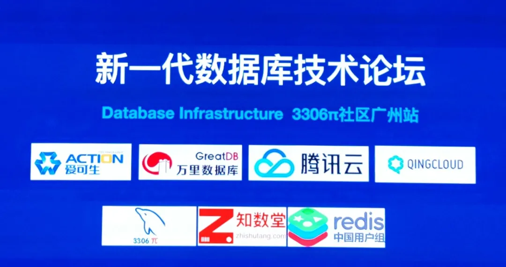
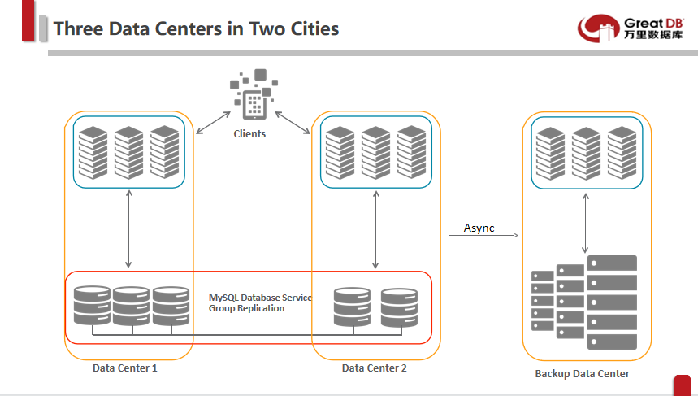
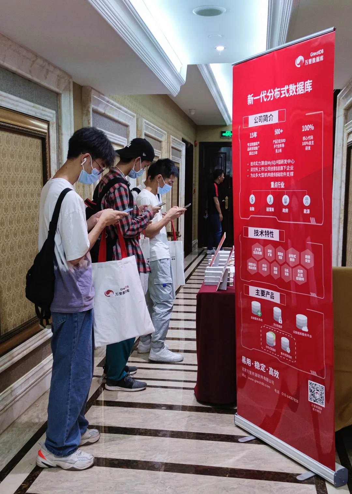
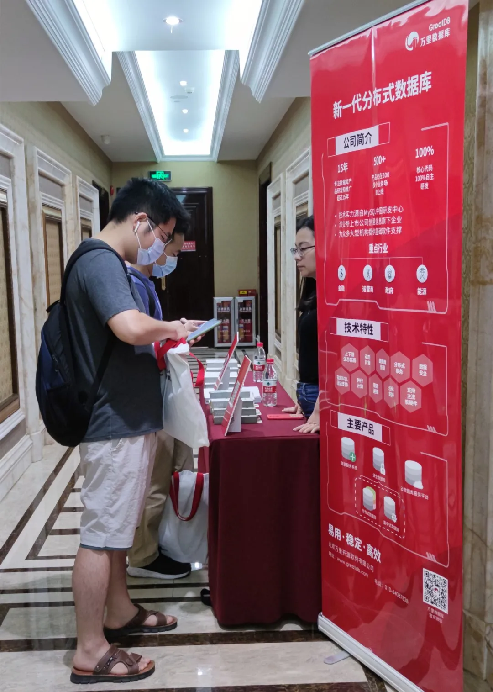

活动 | 3306π新一代数据库技术论坛圆满落幕，MGR最佳实践你get了吗？
大咖汇聚，同台论道。
5月22日，相约羊城。
继3月20日成都站首场技术分享会后，以“新一代数据库技术论坛”为主题的3306π技术分享会广州站于5月22日在粤大金融城国际酒店六层平安厅再度启幕。万里数据库CTO娄帅应邀前往，发表《MGR最佳实践》专题技术演讲，与各位技术大咖同台论道，继续与现场的参会嘉宾分享MGR的实践应用经验与技术成果，为技术人带来专属的知识盛宴。

揭秘MGR最佳实践
万里技术团队率先试水金融行业
MGR是近几年MySQL新功能中的一个核弹级功能。它在提升MySQL金融级应用场景的同时，也扫清了DBA的运维障碍。但由于MGR架构的复杂性，导致很多企业仍处于观望状态。在《MGR Best Practice》专题演讲中，娄总表示，MGR已经达到了生产使用的标准，目前已经有金融企业在生产环境中使用MGR的解决方案。
专题演讲
speech
为了帮助用户更好地使用MGR，在《MGR Best Practice》主题分享中，娄总首先介绍了MGR的背景和发展历史，详细讲解了MGR的体系架构，帮助用户了解MGR的内部结构。在参数配置中，娄总提供了使用奇数个节点、使用单主模式、表必须有主键、必须使用InnoDB引擎等参数调优方面的建议，十分具有实践参考价值。此外，结合MGR的监控，可以随时掌控MGR的状态变化。最后，介绍了MGR针对单个数据中心、一地两中心、两地三中心几种典型的应用场景给出了具体的部署方案，这块内容也是在场嘉宾尤其关注的重点之一。

向下滑动查看
▲三类典型应用场景的MGR部署方案
展位参观踊跃 GreatSQL频受关注
分享会期间，万里数据库设立专门展位，与参会嘉宾就MGR相关的技术问题展开交流探讨。尤其值得一提的是，万里数据库在上个月正式发布的GreatSQL受到此次参会观众的广泛关注。其中不少人表示已在gitee上提交issue，积极参与到GreatSQL的试用之中，帮助GreatSQL优化完善，更好地实现技术优化与版本迭代。
GreatSQL下载试用网址：https://gitee.com/GreatSQL/GreatSQL/releases/v20210401
issue提交网址：https://gitee.com/GreatSQL/GreatSQL/issues
★
参观咨询
★



专注技术，精益求精。3306π社区举办的技术分享会是送给技术人的精神盛宴，为大家搭建了思想碰撞、交流探索的平台，以期帮助大家在数据库研发、运维等技术领域更加精进。万里数据库始终怀揣对数据库技术的敬畏与初心，不仅发布了GreatSQL产品为开源社区做贡献，后续也将不断打磨产品与技术，为技术人提供更易用、稳定、高效的数据库产品与服务。
下一站相约北京，技术小伙伴，不见不散哦~